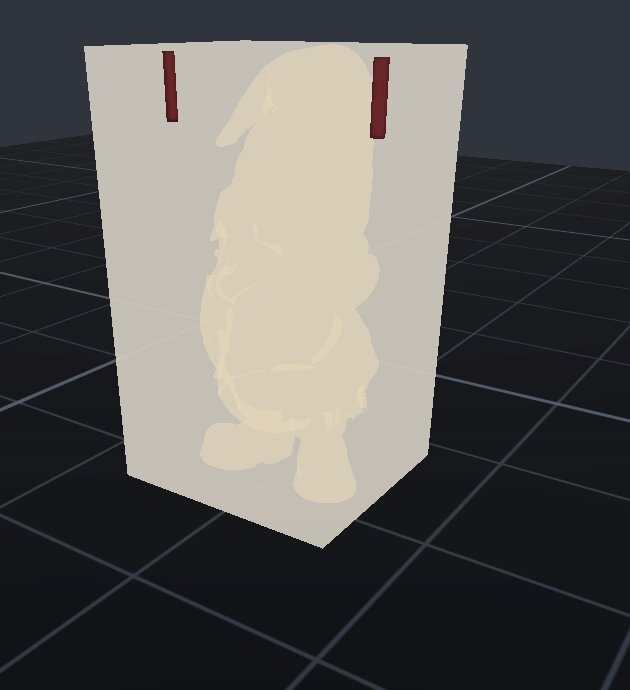

CHIMAERA
The Chimaera is the impossible hybrid — lion, goat, serpent in one body. This crate fuses three unrelated concerns the same way: camera, spacemouse, and picking, one body, none of them domain logic.
The hands. Camera, puck, and pointer — many beasts, one body.

Chimaera — Crate Manual
Quickstart
# Cargo.toml
[dependencies]
chimaera = { path = "../Chimaera" }The central type is chimaera::camera::OrbitCamera — the
perspective orbit/pan/zoom/fly rig every viewport drives:
use chimaera::camera::OrbitCamera;
let mut cam = OrbitCamera::default(); // 3/4 CAD view, above the plate
cam.apply_drag(dx_px, dy_px); // left-drag orbit
cam.apply_pan(dx_px, dy_px); // middle-drag "grab the world"
cam.apply_scroll(ticks); // wheel dollies the orbit radius
cam.update(&mut scene.graph, camera_handle, dt_ms); // per-frame: writes the nodeWhat it is
The viewport crate of the Leviathan Design Suite: 3D camera control,
SpaceMouse input, and pure picking/gizmo math, lifted out of the design
tool (2026-08-09) so every window that shows a scene shares one proven
set of hands. Sovereign, local-first, fyrox 1.0 only; PolyForm Small
Business licensed. Ground truth for every sign in here = operator hands
— the pan_canon_* tests pin the grab-the-world contract;
never re-derive from documentation.
API surface
camera::OrbitCamera— orbit target/radius, quaternion rotation, FOV;apply_drag/apply_drag_local/apply_pan/apply_scroll/apply_roll,tween_to/clear_focus/frame/snap_view, fly mode (enter_fly,fly_translate,exit_fly_to_orbit,is_flying),world_position/rotationfor ray math, per-frameupdate.camera::pan_canon— THE one pan seam (camera-relative, both consumers).spacemouse— 3Dconnexion Compact (256f:c635) hidraw reader:spawn_hidraw_reader() -> Option<SpaceMouseHandle>,fresh_axes()/inject(),parse_report,apply_deadzone/scale_axis/response_curve,probe(seconds)for windowless device checks.interact— pure math:cursor_to_ray,world_to_screen,plane_point,ray_vs_aabb,ray_vs_triangle,surface_snap_y,closest_point_on_axis,ring_angle/ring_hit,snap_angle_deg/round_to_step,arrow_delta,ruler_segments,skydome_mesh,compass_ticks,shift_pick/clear_multi,PickCycle.
Consumers
Vitruvius (the design module), Ouranos, and the prep windows (Iris, Jove). Any Leviathan surface that opens a 3D viewport takes Chimaera as a path dependency rather than growing its own camera.
Known limits
- Poisoned-mutex on the spacemouse thread reads as idle:
fresh_axes()returnsNoneon a poisoned lock, so a panicked reader looks like a hands-off device instead of failing loud. Open finding. - Legacy
SIG_*env names are still honored (SIG_PAN_SIGN,SIG_SPACEMOUSE_HIDRAW,SIG_SPACEMOUSE_FLY_SPEED) — SigNature-era names that predate the Vitruvius rename. - Fyrox-shaped: the X-mirror compensation and +Z-forward conventions
in
interactare fyrox renderer facts, not portable math.